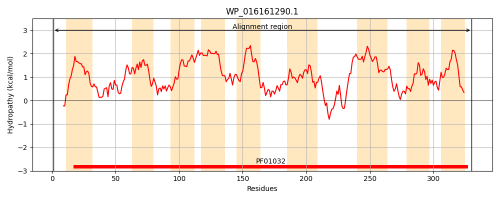
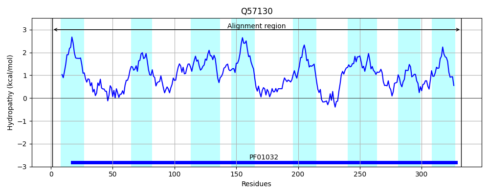
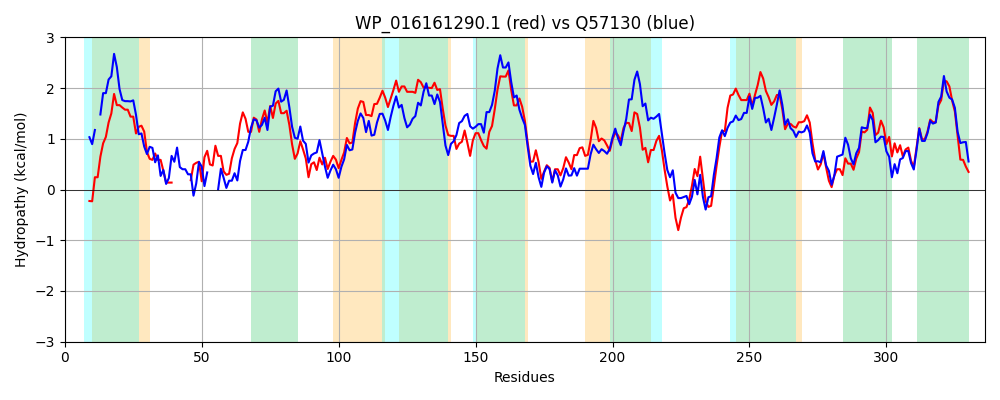

Hit Accession: Q57130
Hit TCID: 3.A.1.14.11
Hit Description: gnl|BL_ORD_ID|14176 gnl|TC-DB|Q57130|3.A.1.14.11 Probable ABC transporter permease protein HI_1471 OS=Haemophilus influenzae (strain ATCC 51907 / DSM 11121 / KW20 / Rd) GN=HI_1471 PE=1 SV=1
Mach Len: 336
e:0.000000
Query TMS Count : 9
Hit TMS Count: 8
TMS-Overlap Score: 7.300000
Predicted Substrates:CHEBI:6967;molybdate, CHEBI:46502;tungstate
BLAST Alignment:
Score: 800 , Bit scores: 312 bits, E-value: 8.0e-106, Alignment length: 336, Percentage identity: 50
Query: 1 MRANHHPWRLQGSLALATLAIAVASLCFGQYPLSLRAVGH------TLVHLPPGEGVIGQIVWSVRLPRVVMALLAGGALGLCGATLQGVFQNPLVDPHIIGVTAGSAFGGTLAILLGVGGLLMMASTFFFGLIALGLIYALAALQGRDSTLGLILSGIILSGFFAALVSLMQYLADSEETLPNIVFWLLGSFATASWHKVLLMSLPMALAAGVLWKLRWRINLLALEERDARSLGVPVAALRRGVLVCCAVLVAAQVAVSGSIAWMGLVVPHLARLLVGADHRRLLPTAFWLGAALMLVVDDLARTLTQAEIPIGIITALLGAPLFTFLLVQSRR 330
M+ + +P L G L L + AV SL G+Y LS+ +G T + + P V Q+++ VRLPR++ AL G L L G LQG+F+NPLV+PHIIGVT+GSAFGGTLAI G + ST FG L L++ + + S L LIL G+ILSG F+ALVSL+QY++D+EE LP+IVFWL+GSFAT++W K+L +P L + +L L WR+NLL+L+E++A++LGV +A LR V+ LVA QVA+SGSI W+GL++PHL+R+LVGA+H+ LLP +GA ML+VD++AR+L+ AEIPI I+TAL+GAPLF L+ + +R
Sbjct: 1 MQPDSYPKILFG-LTLLLVITAVISLGIGRYSLSVPQIGQILWAKATALEIDP---VQQQVIFQVRLPRILTALCVGAGLALSGVVLQGIFRNPLVNPHIIGVTSGSAFGGTLAIFFGFSLYGLFTSTILFGFGTLALVFLFSFKFNQRSLLMLILIGMILSGLFSALVSLLQYISDTEEKLPSIVFWLMGSFATSNWEKLLFFFVPFLLCSSILLSLSWRLNLLSLDEKEAKALGVKMAPLRWLVIFLSGSLVACQVAISGSIGWVGLIIPHLSRMLVGANHQSLLPCTMLVGATYMLLVDNVARSLSDAEIPISILTALIGAPLFGVLVYKLKR 332 | Protein Hydropathy Plots: |
|---|
|  |  |
Pairwise Alignment-Hydropathy Plot:
|
|---|
|  |